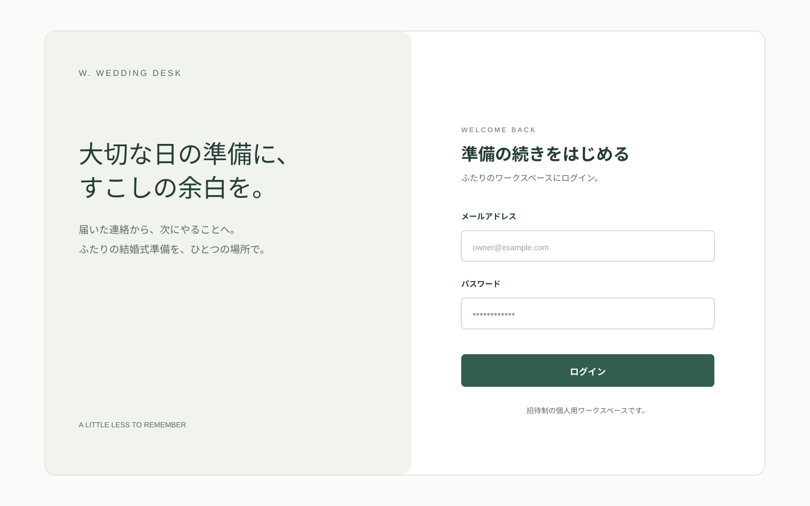
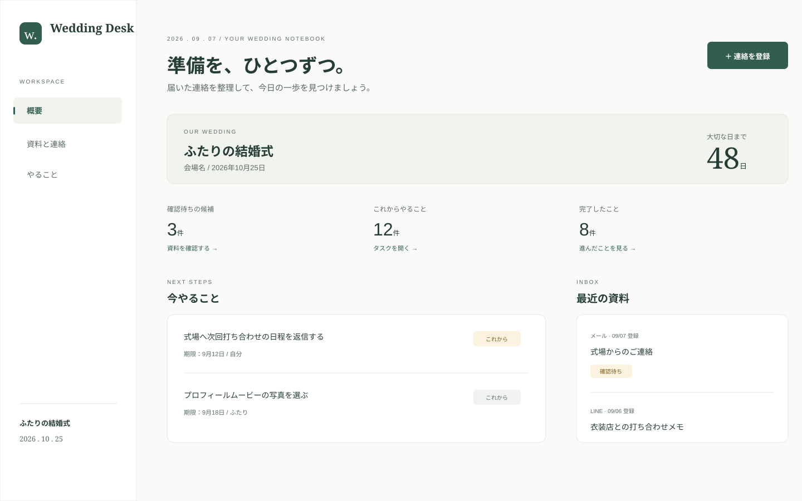
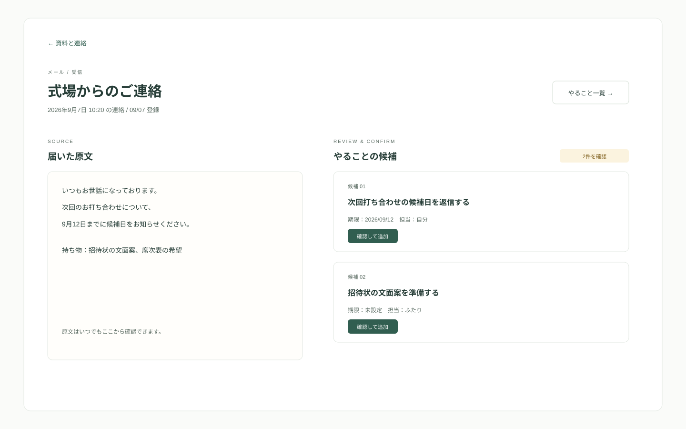
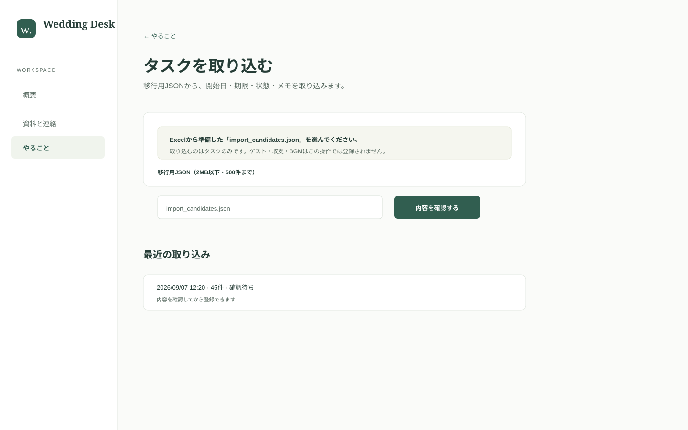

確認待ちの候補
登録した連絡から見つかった、まだタスク化していない候補です。原文と照らし合わせて判断します。
QUICK GUIDE / FOR TWO
届いたメールやLINE、打ち合わせメモを残して、次にやることを一緒に管理するための使い方ガイドです。
管理者から渡されたメールアドレスとパスワードでログインします。登録・招待機能はなく、ふたりだけで使う前提です。

ログイン後の「ダッシュボード」には、確認待ちの候補、これからやること、完了したこと、最近の資料がまとまります。

登録した連絡から見つかった、まだタスク化していない候補です。原文と照らし合わせて判断します。
期限・担当・状態をもとに、次に進めるタスクが表示されます。タスクを開いて状態を更新できます。
「資料と連絡」から「＋ 連絡を登録」を開き、文章を貼り付けるか写真・PDFを添付します。情報元は入力形式から自動で分類され、原文と添付は保存されます。
本文がない資料も保存できます。スマホのカメラで撮影するか、端末から画像・PDFを複数選びます。
資料の詳細画面では、左に原文、右に整理された候補が表示されます。期限・担当・内容が原文と合っているものだけ確認して追加します。

チェックした候補だけが「やること」に追加されます。確認前の候補は残るため、あとで戻れます。
「やること」でタスクを開くと、タイトル・担当・期限・メモ・状態を変更できます。
「結婚式の設定 → 初回データ移行 → Excelをまとめて移行」から2つのxlsxを選び、統合プレビューで警告と担当A/Bを確認してから一括登録します。数式は実行せず、実績額や日付不明の金額は要確認で残ります。旧JSONのタスク取り込みも利用できます。
BGMシートの「〃」「同上」は直前のシーンにまとめ、内容のない行は候補として登録しません。

「検討・決定」から演出やBGMなどの項目を追加し、候補を複数登録します。採用時は費用の扱いを必ず選び、登録済みの金額への紐付けや新しい支出を同時に保存できます。
BGMカテゴリでは候補ごとに希望曲A/B、決定曲、アーティスト、開始秒、シーン、元表記を登録できます。
項目詳細から費用とタスクを追加・解除できます。リンクを解除しても費用項目や入出金履歴は削除されません。
ゲスト、世帯、席次、引き出物、収支、決定事項を同じWedding内で関連付けて管理します。
状態・担当・カテゴリ・期間・文字で絞り込み、一覧または週／月のガントで確認できます。選択中のページ、または絞り込み結果を一括変更できます。
個人を世帯にまとめ、出欠、席次、役割、ご祝儀見込、世帯ごとの引き出物を管理します。
収入と支出を概算／確定で登録し、支払・受取・返金の履歴から残額を確認します。ゲスト数などに連動する概算にも対応します。
演出、衣装、料理、写真、BGMなどの候補と採用結果を残し、関連タスクと費用を結びます。
新しい連絡が来たら資料として残し、候補を確認したらタスクにします。ふたりで同じ画面を見ることで、返信漏れや期限の見落としを減らせます。